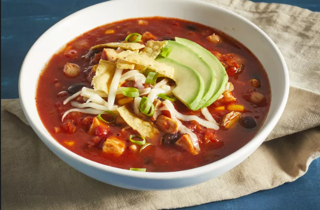

Back
Chicken Tortilla Soup

Savory Homemade Chicken Tortilla Soup
Authentic Chicken Tortilla Soup
Ingredients
- 1 tablespoon of Olive Oil
- 1 medium onion
- 3 cloves garlic
- 1(28 oz) can of crushed tomatoes
Steps
- Heat oil in a medium sauce pan over medium heat. Add onion and garlic;
saute until soft for about 5 minutes. Stir in crushed tomatoes and bring
to boil. Reduce heat and simmer for 5 to 10 minutes.
- Stir in black beans, cooked chicken, corn,hominy, chile peppers and cilantro.
Continue to simmer for 5 to 10 minutes.